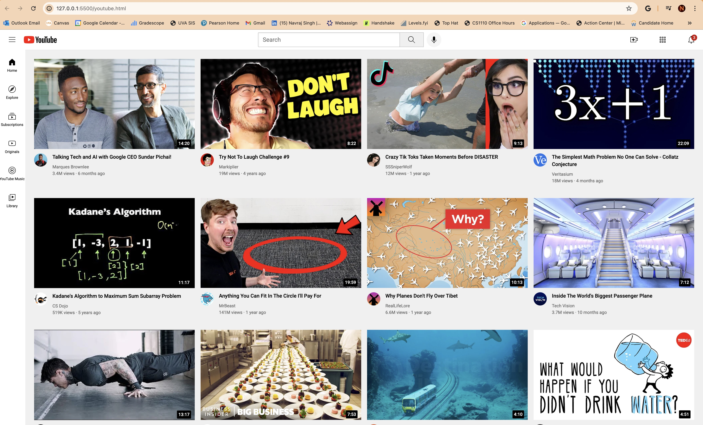
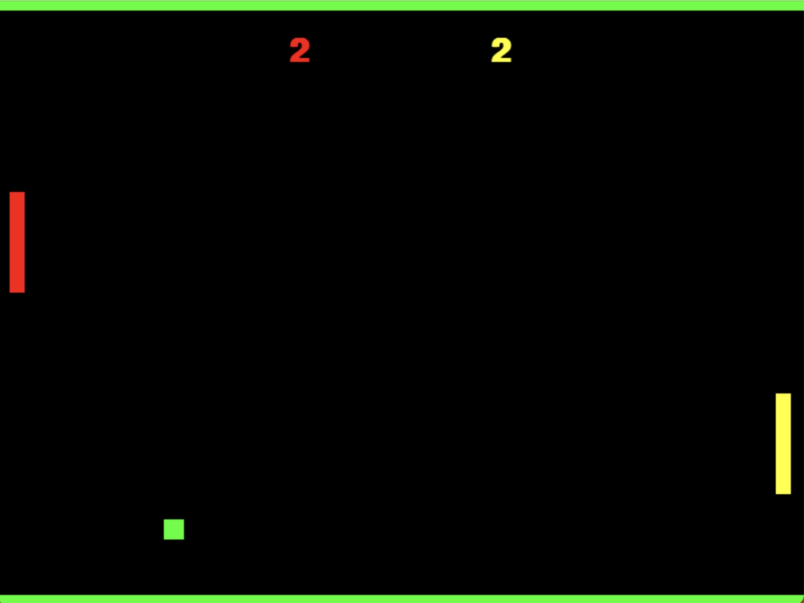
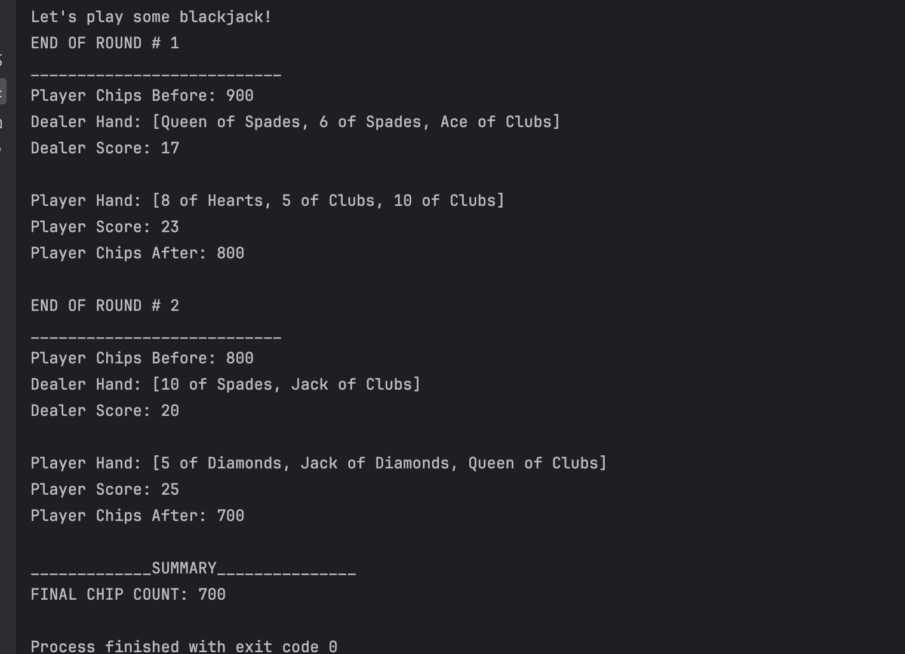
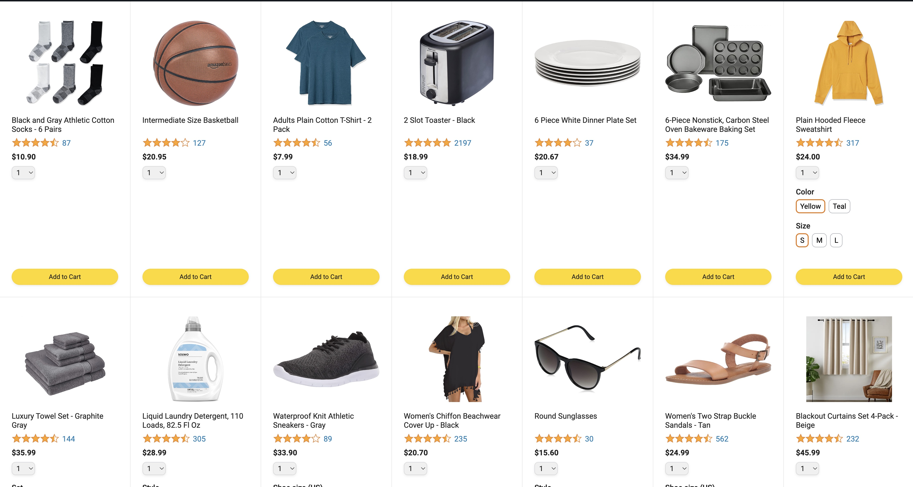

Developed a video streaming interface compatible with multiple devices, showcasing and connecting to various video genres. Built using HTML and CSS, leveraging CSS Grid, Flexbox, positioning techniques, responsive design, and media queries to ensure cross-device functionality. Progressed foundational HTML and CSS skills to structure content and style elements.
Developed a retro two player ping pong game using a school game development library. Key aspects included the implementation of core game mechanics (collision detection, scoring and ball movement) and multiplayer functionality that includes two player interaction ensuring smooth and responsive gameplay.
A java based one player game with the dealer as the computer focusing on java basics including inheritance, class development and code implementation. Key elements included dealer logic which involved ensuring the computer follows the standard Blackjack rules, and game mechanics that included blackjack rules, card dealing, hit/stand logic and user betting.
Developed a full stack e-commerce website using HTML, CSS, and JavaScript, allowing users to browse and search for products, customize options, manage their cart, and track orders. Implemented advanced features including modules, object-oriented programming, callbacks, promises, and async/await, alongside backend development and external libraries
